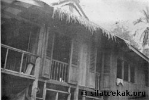
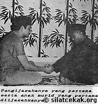

Silat Cekak berasal dari Kedah. Pernah diamalkan oleh panglima-panglima kerajaan Kedah di zaman Kesultanan Sultan Ahmad Tajuddin II.
Panglima Ismail, salah seorang panglima kanan kerajaan Kedah yang pernah menewaskan seorang batak bernama Tuah (bukan Hang Tuah) telah menurunkan ilmu silat ini kepada Panglima Tok Rashid. Manakala Panglima Tok Rashid pula telah mengamanahkan Silat Cekak ini kepada Yahya Said yang berasal dari Batu Kurau, Taiping sebagai 'pemegang amanah'.

Panglima Tok Rashid meninggalkan wasiat kepada Yahya Said yang ketika itu berumur 20 tahun:
"Jika ada anak cucuku di Kedah hendak belajar silat ini, hendaklah kau pulangkan kembali".
Silat ini telah terpendam selama 40 tahun sehinggalah Y.M. Ustaz Haji Hanafi bin Haji Ahmad yang berasal dari Kedah, telah bertemu dengan Yahya Said.
Oleh kerana minatnya yang amat mendalam terhadap silat ini, Y.M. Ustaz Haji Hanafi bin Haji Ahmad telah dapat mewarisi kembali seni pusaka bangsa ini daripada Yahya Said. Pada 5 Ramadhan 1385 Hijrah, bersamaan 28 Disember 1965, bertempat di rumah Shafie Darus, Batu 4 3/4, Jalan Gunung Alor Setar, Kedah; Silat Cekak berjaya dilahirkan kembali menerusi Perkumpolan Seni Sari Budaya Sri Kedah yang ditubuhkan pada Februari 1964.

Kemudian pada 19 Ogos 1971, Persatuan Seni Silat Cekak Malaysia didaftarkan dan diasaskan oleh YM Al-Marhum Ustaz Hanafi bin Haji Ahmad Pada tahun 1975, Persatuan Seni Silat Cekak Malaysia telah menyaksikan logo baru baginya yang mana ianya juga telah diasaskan oleh Y.M. Al-Marhum Ustaz Haji Hanafi bin Haji Ahmad, Guru Utama merangkap Presiden PSSCM.
Beliau telah meninggal dunia pada 13 Ogos, 1986 setelah menerajui PSSCM dan mengembangkan silat ini ke seluruh negara selama 21 tahun.
Tanggungjawab ini diteruskan pula oleh Y.M. Haji Ishak bin Itam selaku Guru Utama merangkap Presiden PSSCM pada 21 September, 1986. Majlis pengijazahan penuntut baru pertama kali dilakukan oleh beliau di Universiti Pertanian Malaysia pada 13 Oktober, 1986. Y.M. Haji Ishak Itam terus menerajui PSSCM sehingga beliau menyerahkan pucuk pimpinan Silat Cekak kepada Y.Bhg. Datuk Haji Maideen Bin Kadir Shah pada 3 Jun 2009 dan secara beradat pada 23 Jun 2009.
Seterusnya hingga sekarang cawangan-cawangan dan kelas latihan PSSCM telah berkembang di seluruh Semenanjung Malaysia dengan pembukaan kelas-kelas latihan di cawangan-cawangan negeri dan di institusi pengajian tinggi awam dan swasta di seluruh Semenanjung Malaysia.